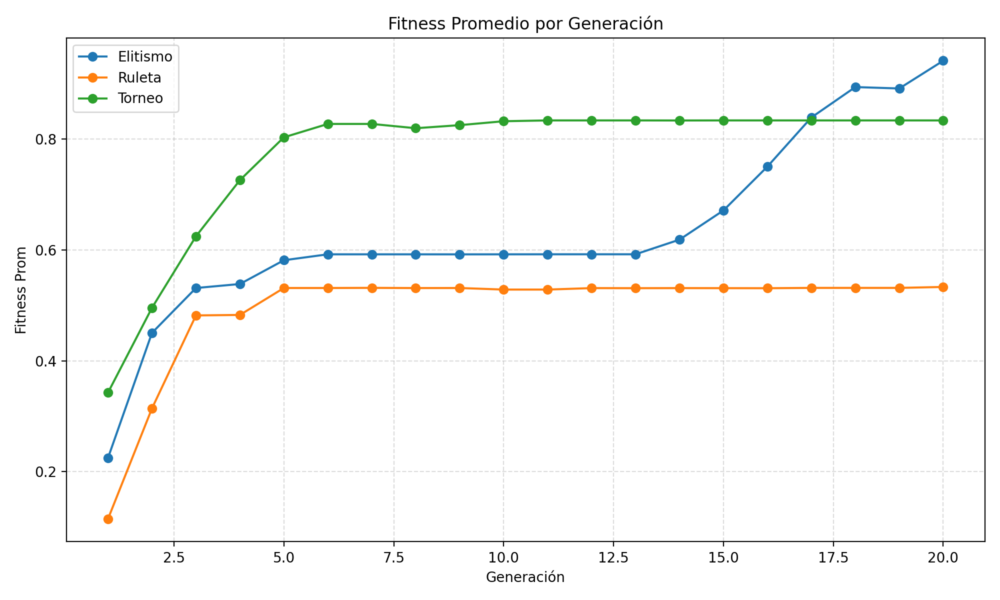
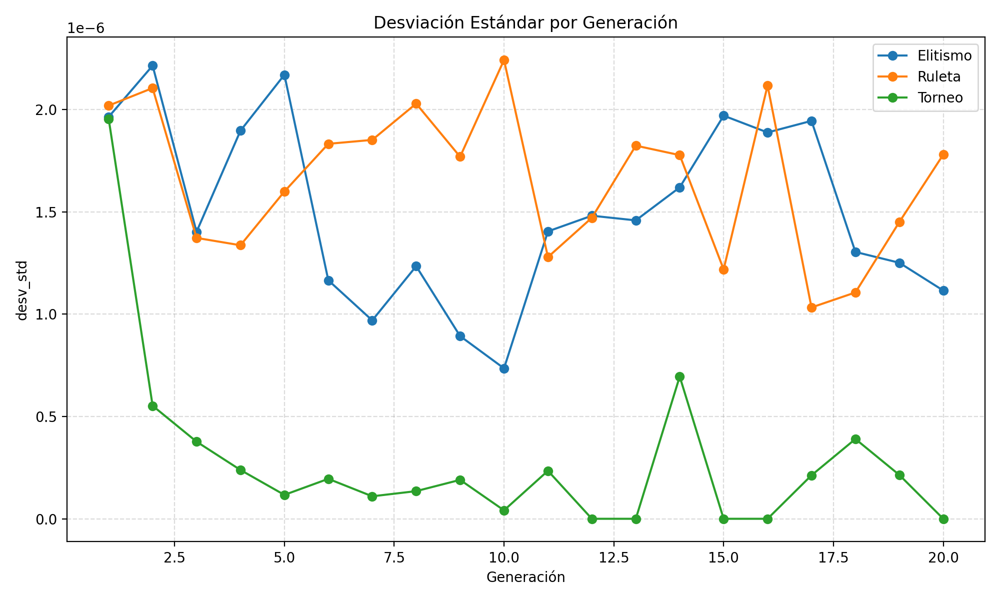
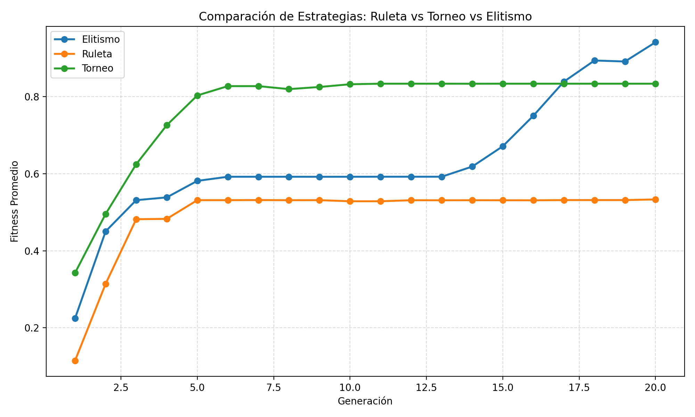
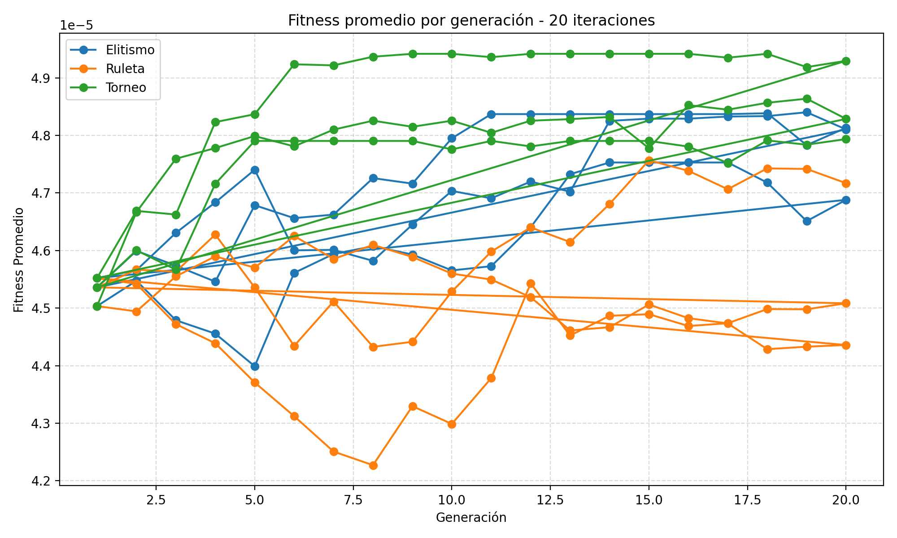
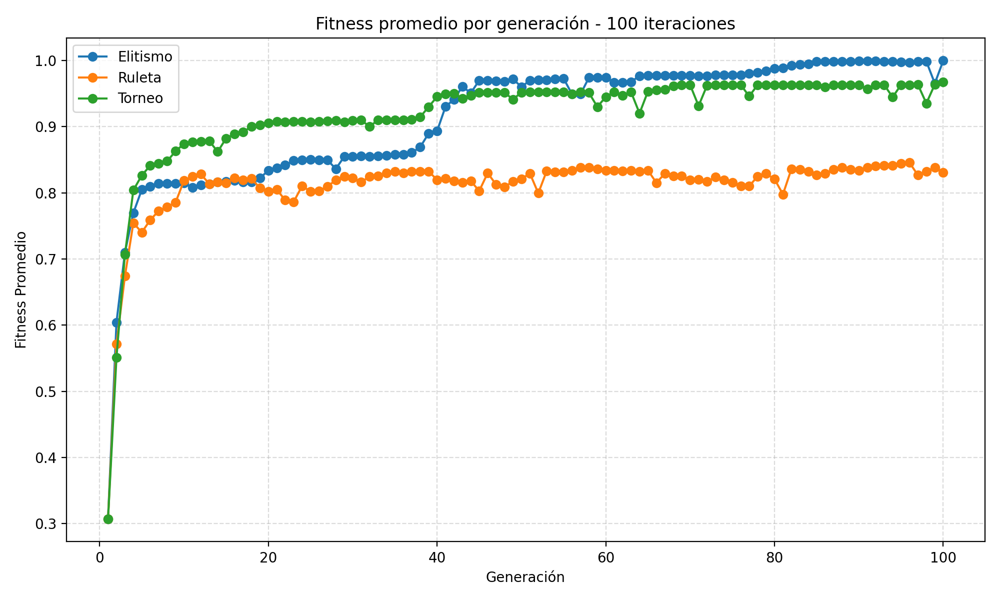
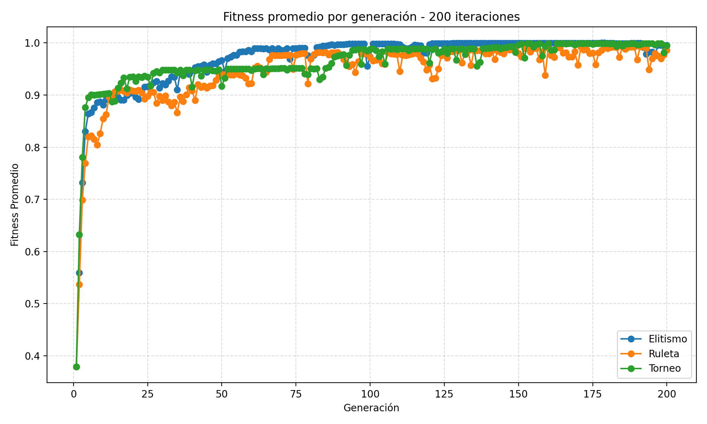

1. Introduccion teorica (AG canonico, elitismo)
El Algoritmo Genetico (AG) canonico es una metaheuristica inspirada en evolucion biologica. Trabaja con una poblacion de soluciones candidatas y aplica operadores de seleccion, crossover y mutacion para mejorar iterativamente la calidad de las soluciones.
En este trabajo se comparan tres estrategias de seleccion: ruleta, torneo y elitismo. El elitismo conserva los mejores individuos de cada generacion y reduce la probabilidad de perder soluciones de alto rendimiento, acelerando la convergencia.
Fitness = 1 / (1 + (TiempoTotal + Penalizacion))
2. Descripcion del problema y funcion objetivo
Un SOC recibe 500 alertas de ciberseguridad y dispone de 10 analistas. Cada alerta se caracteriza por prioridad (Baja, Media, Alta, Critica), severidad y tiempo estimado de resolucion.
El objetivo es obtener una asignacion alerta-analista que minimice tiempos operativos, disminuya backlog y mantenga balance de carga.
- TiempoTotal: maximo tiempo acumulado entre analistas.
- Desbalance: desviacion estandar de cargas.
- Sobrecarga: exceso sobre el 120% de carga promedio.
- EsperaCritica: demora media de alertas criticas.
- Backlog: alertas fuera de umbral tipo SLA.
Penalizacion = 2.0*Desbalance + 1.5*Sobrecarga + 1.2*EsperaCritica + 30.0*Backlog
3. Parametros fijos y variables (tabla)
| Tipo | Parametro | Valor | Descripcion |
|---|---|---|---|
| Fijo | Analistas | 10 | Cantidad de recursos SOC |
| Fijo | Alertas | 500 | Volumen diario simulado |
| Fijo | Generaciones | 20 | Iteraciones evolutivas |
| Fijo | Crossover | 1 punto | Recombinacion de padres |
| Fijo | Mutacion | Invertida | Inversion de segmento |
| Variable | Seleccion | Ruleta / Torneo / Elitismo | Estrategia de eleccion de padres |
| Variable | Poblacion | 10 (base), 20 (exp.) | Tamano de poblacion en pruebas adicionales |
| Variable | P mutacion | 0.05 (base), 0.10 (exp.) | Probabilidad de mutacion |
| Variable | P crossover | 0.75 | Probabilidad de recombinacion |
4. Codificacion y Resultados para Opcion A (ruleta)
Codificacion: cromosoma de 500 genes. Cada gen indica el analista asignado a una alerta (valores 0..9).
| Metodo | Mejor Fitness | Tiempo Total Estimado (min) | Backlog | Desbalance | Tiempo Ejecucion (s) |
|---|---|---|---|---|---|
| Ruleta | 0.0000486717 | 4191 | 435 | 320.7082 | 0.0088 |
5. Codificacion y Resultados para Opcion B (torneo)
Codificacion: mismo esquema de asignacion alerta-analista. Torneo usa submuestras y selecciona el mejor individuo local.
| Metodo | Mejor Fitness | Tiempo Total Estimado (min) | Backlog | Desbalance | Tiempo Ejecucion (s) |
|---|---|---|---|---|---|
| Torneo | 0.0000490218 | 4211 | 434 | 275.8959 | 0.0086 |
6. Codificacion y Resultados para Opcion C (elitismo)
Codificacion: igual representacion de cromosoma. En elitismo, los mejores individuos pasan a la siguiente generacion sin modificacion.
| Metodo | Mejor Fitness | Tiempo Total Estimado (min) | Backlog | Desbalance | Tiempo Ejecucion (s) |
|---|---|---|---|---|---|
| Elitismo | 0.0000494012 | 4196 | 433 | 236.7745 | 0.0085 |
Mejor solucion global (base)
- Metodo ganador: Elitismo
- Carga por analista (min): [4196, 3348, 3621, 3761, 3875, 3632, 3872, 4095, 4009, 3789]
- Distribucion final de alertas: [51, 40, 49, 55, 47, 46, 57, 55, 50, 50]
7. Experimentos adicionales (cambio de parametros)
Se realizaron dos experimentos extra sobre la base original: aumento de mutacion a 0.10 y aumento de poblacion a 20.
| Experimento | Metodo | Poblacion | P Mutacion | Mejor Fitness | Tiempo Total (min) | Backlog | Desbalance |
|---|---|---|---|---|---|---|---|
| Base | Ruleta | 10 | 0.05 | 0.0000486717 | 4191 | 435 | 320.7082 |
| Base | Torneo | 10 | 0.05 | 0.0000490218 | 4211 | 434 | 275.8959 |
| Base | Elitismo | 10 | 0.05 | 0.0000494012 | 4196 | 433 | 236.7745 |
| Mutacion 0.10 | Ruleta | 10 | 0.10 | 0.0000486717 | 4191 | 435 | 320.7082 |
| Mutacion 0.10 | Torneo | 10 | 0.10 | 0.0000490218 | 4211 | 434 | 275.8959 |
| Mutacion 0.10 | Elitismo | 10 | 0.10 | 0.0000494012 | 4196 | 433 | 236.7745 |
| Poblacion 20 | Ruleta | 20 | 0.05 | 0.0000487838 | 4197 | 437 | 311.6831 |
| Poblacion 20 | Torneo | 20 | 0.05 | 0.0000483875 | 4434 | 433 | 309.5309 |
| Poblacion 20 | Elitismo | 20 | 0.05 | 0.0000495919 | 4103 | 434 | 201.0840 |
Resumen de minimos, promedios y maximos por configuracion
| Iteraciones | Metodo | Mejor Fitness Promedio | Mejor Fitness Max | Mejor Fitness Min | Tiempo Ejecucion Promedio (s) | Generacion Mejor Fitness Prom. |
|---|---|---|---|---|---|---|
| 20 | Ruleta | 0.0000480279 | 0.0000487415 | 0.0000475298 | 0.008364 | 6.0 |
| 20 | Torneo | 0.0000490076 | 0.0000494176 | 0.0000483702 | 0.008312 | 8.33 |
| 20 | Elitismo | 0.0000481635 | 0.0000485186 | 0.0000475298 | 0.008224 | 11.0 |
| 100 | Ruleta | 0.0000487915 | 0.0000495549 | 0.0000479330 | 0.041669 | 6.67 |
| 100 | Torneo | 0.0000497780 | 0.0000501701 | 0.0000495580 | 0.041677 | 56.0 |
| 100 | Elitismo | 0.0000493015 | 0.0000494749 | 0.0000491816 | 0.040140 | 82.0 |
| 200 | Ruleta | 0.0000484450 | 0.0000488781 | 0.0000481924 | 0.081570 | 57.0 |
| 200 | Torneo | 0.0000498730 | 0.0000500920 | 0.0000495811 | 0.080973 | 170.0 |
| 200 | Elitismo | 0.0000501598 | 0.0000503518 | 0.0000498892 | 0.080595 | 180.67 |
8. Graficas comparativas (maximos, minimos, promedios)
Las siguientes curvas permiten comparar desempeno y convergencia entre ruleta, torneo y elitismo.








9. Tabla resumen de estabilidad y tiempos
| Metodo | Fitness Prom. Medio | Std(Fitness Prom.) | Coef. Variacion (%) | Tiempo Gen. Medio (s) |
|---|---|---|---|---|
| Elitismo | 0.0000472207 | 0.0000008010 | 1.6962 | 0.000406 |
| Ruleta | 0.0000450615 | 0.0000007307 | 1.6215 | 0.000419 |
| Torneo | 0.0000479335 | 0.0000010017 | 2.0897 | 0.000415 |
10. Conclusiones y recomendacion final
El AG canonico aplicado a scheduling SOC cumplio los objetivos de modelado y evaluacion comparativa. En la configuracion base, elitismo mostro el mejor fitness global y mejor balance operativo general.
Como recomendacion final para este escenario se sugiere utilizar elitismo como estrategia principal y continuar con experimentos de ajuste de poblacion y pesos de penalizacion para reducir backlog en contextos de alta demanda.